Games
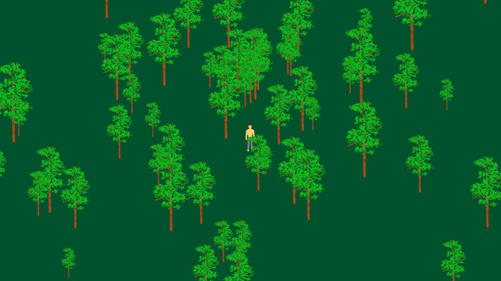
RunAn animated character in a generated forest.
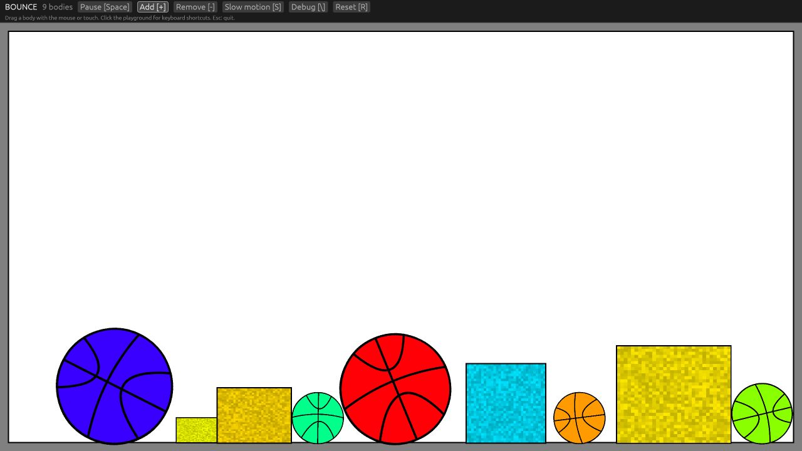
BounceA sandbox for rigid-body collisions.
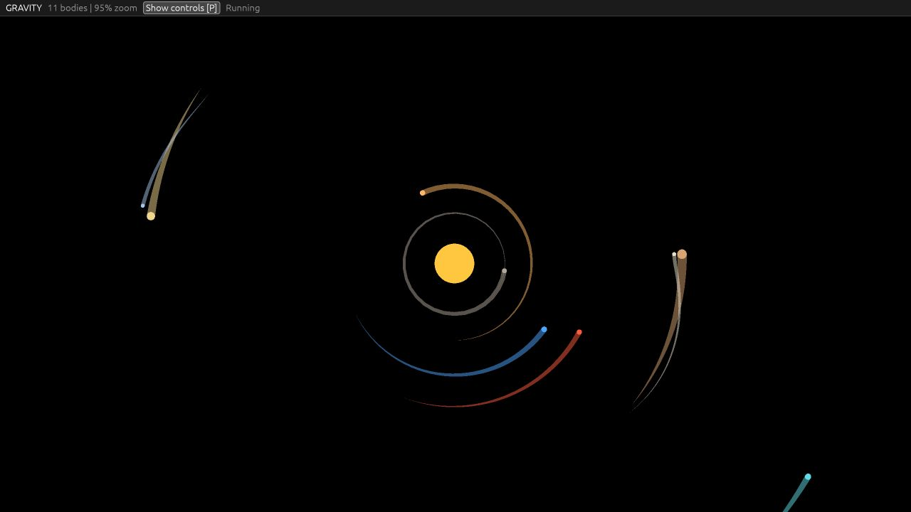
GravityAn orbital simulation with interactive bodies.
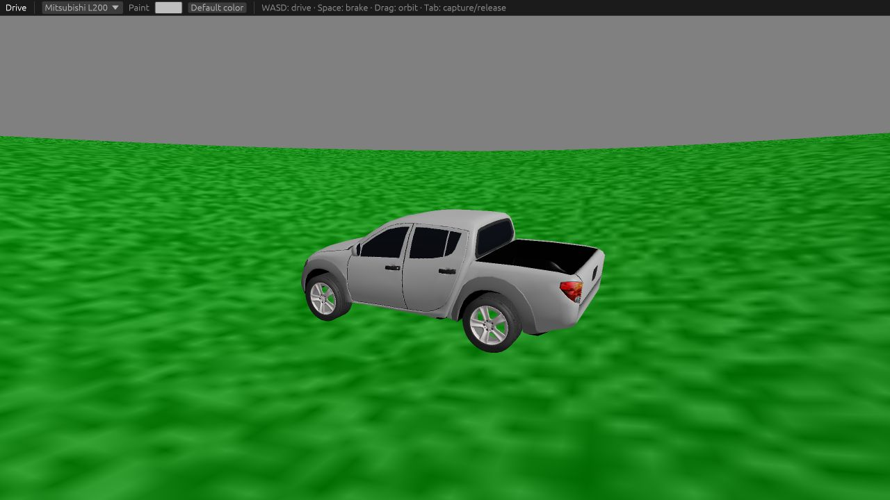
DriveA 3D driving simulation.
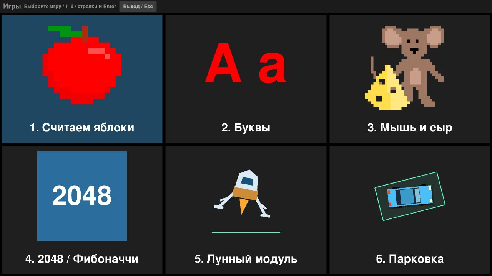
GamesPuzzles, parking, a moon lander, and other games.
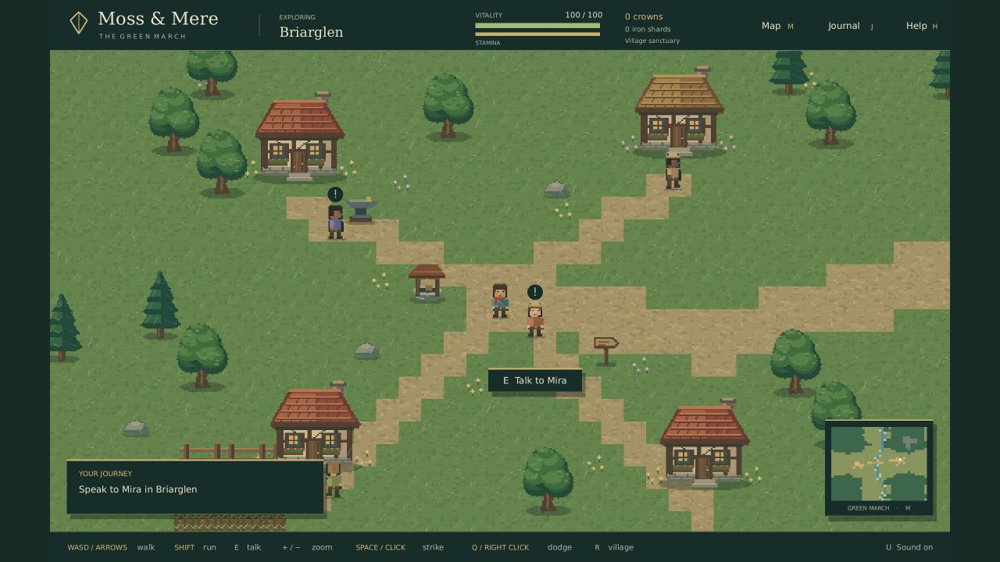
Moss & MereA fantasy RPG with exploration, villagers, combat, and quests.
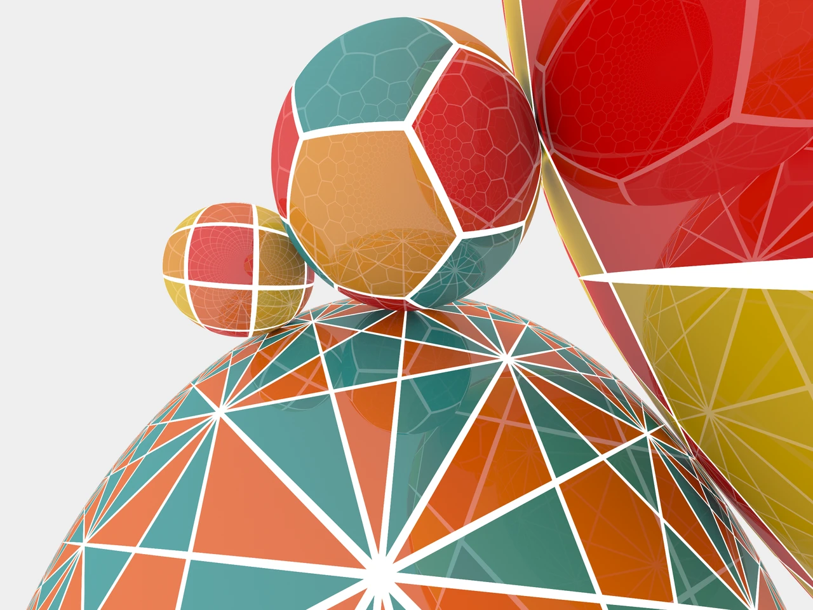
HypertraceA non-Euclidean space renderer. Requires a WebGPU-capable browser and GPU.
Examples
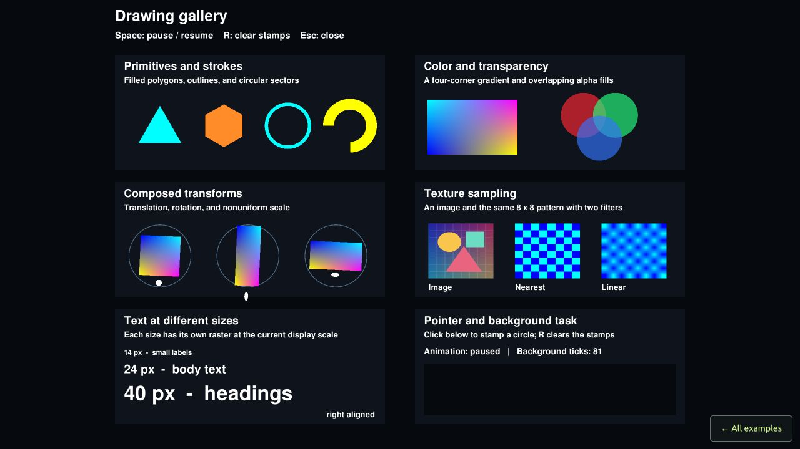
PlaygroundShapes, textures, text, and animation.
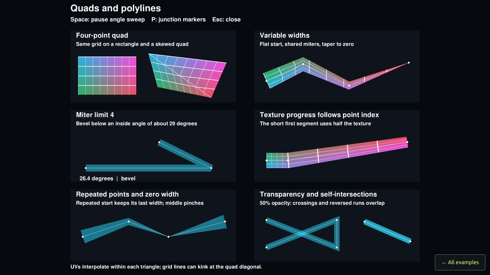
PolylinesWidths, joins, textures, and transparency.
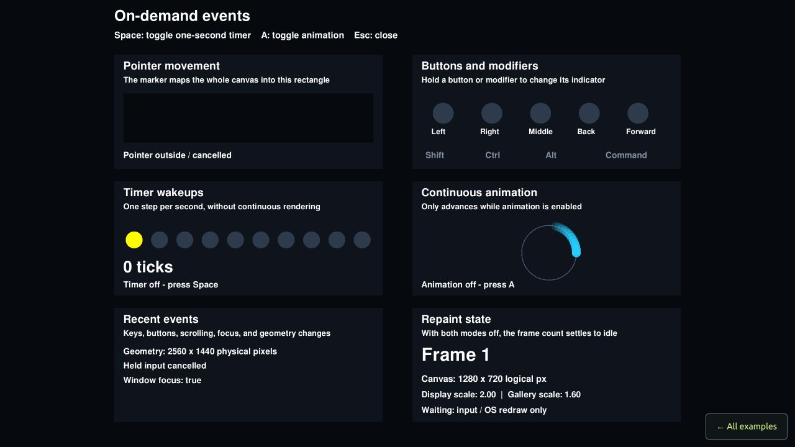
On-demand eventsInput, timers, and continuous redraws.
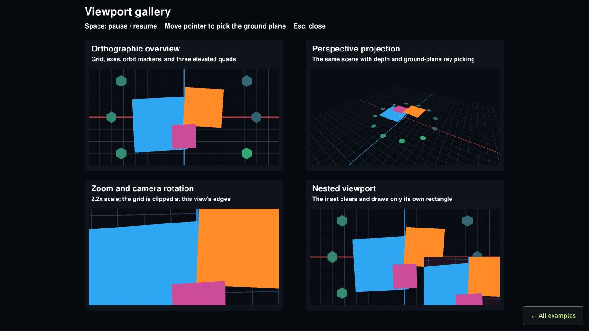
ViewportsCameras, clipping, nested views, and picking.
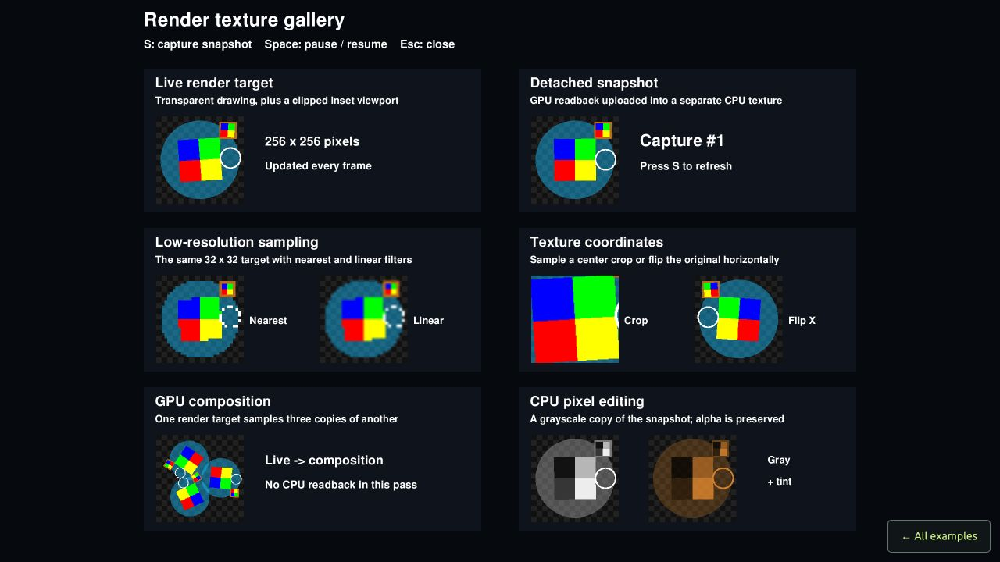
Render texturesOffscreen rendering, sampling, composition, and snapshots.
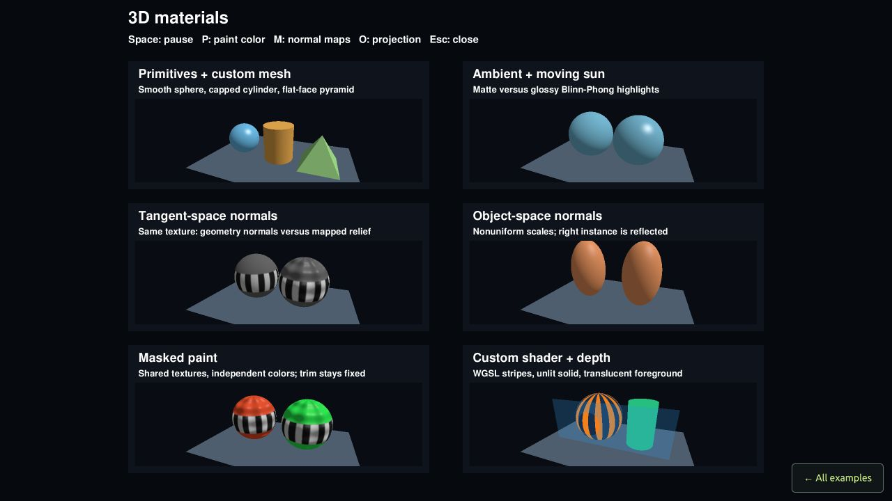
3D materialsLighting, normal maps, and masked paint materials.
These demos run with WebAssembly. Hypertrace requires WebGPU; the other games and examples use WebGL2. Click the canvas to use keyboard controls.